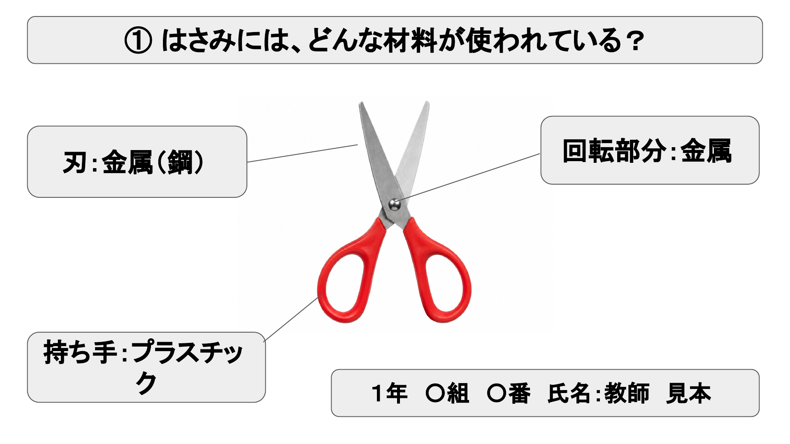
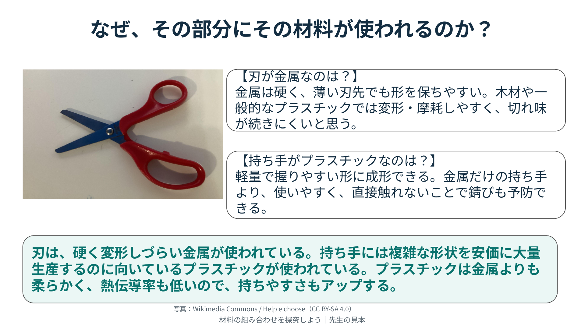
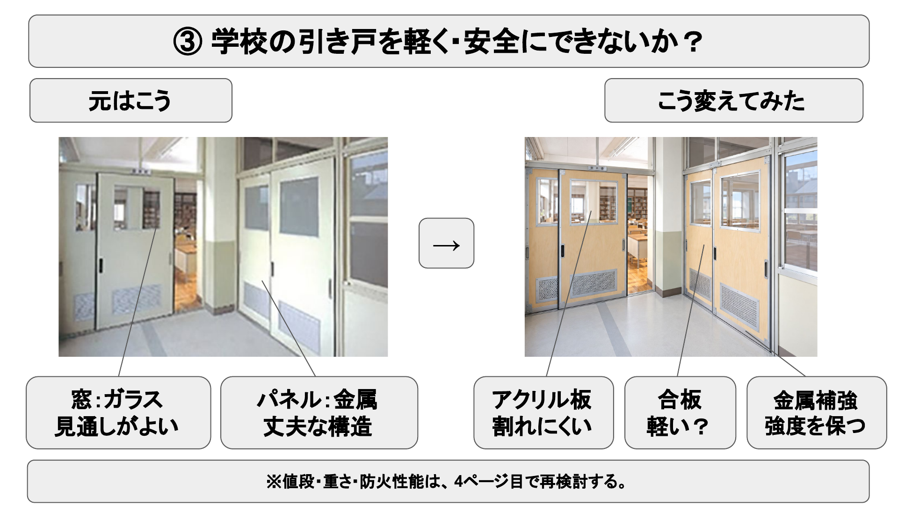
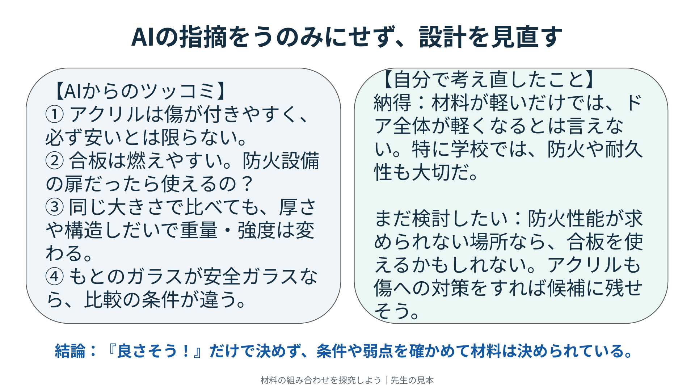

01 必須
製品の材料を調べる
2つ以上の材料を組み合わせて作られている既存の製品を選ぼう。製品写真を載せ、タイトル・自分の名前・素材名だけを書く。素材名は写真のどの部分か分かるように示そう。材料を選ぶ理由は、次のページに書くよ。

この4枚を、左から順に作ろう。
各ページで何を載せるか、下の説明で確認しよう。
下の画像は、先生の見本スライド全4枚です。画像を押すと大きく開けます。先生の見本スライドを開く ↗
2つ以上の材料を組み合わせて作られている既存の製品を選ぼう。製品写真を載せ、タイトル・自分の名前・素材名だけを書く。素材名は写真のどの部分か分かるように示そう。材料を選ぶ理由は、次のページに書くよ。

1ページ目と同じ製品について、なぜその材料の組み合わせになっているのか、自分で考えたことを書こう。「丈夫だから」で終わらず、材料の特性がその部分の役割にどう役立つか説明しよう。
これは理由を考えるためのヒント。全部の視点を入れる必要はありません。「社会性・経済性・環境性」という言葉そのものを使わなくてもOK！ 自分が気づいた理由を、自分の言葉で説明しよう。

「この材料を組み合わせた方がよくない？」という自分の提案と、その理由を紹介しよう。提案した製品のイメージをAIで画像にして載せよう。1・2ページ目と別の製品でもOK！ 画像には「AI生成画像」と書いて、実物の写真と区別しよう。

3ページ目で提案した材料の組み合わせと理由をAIに伝え、「本当に有効？ 問題点は？」と聞こう。その結果をまとめ、納得した点・疑問や異論・直したい点を自分の言葉で書こう。AIの回答をそのまま貼るだけで終わらせないこと。

「素材の組み合わせ探求サポーターGem」で相談・③の画像生成・④のツッコミができます。
AIは間違えることもあります。必ず確認し、丸写ししないこと。明らかな誤りのコピペは減点です。
① 写真と材料名を書いた？
② 自分なりの理由を書いた？
名前・組・番号は入れた？